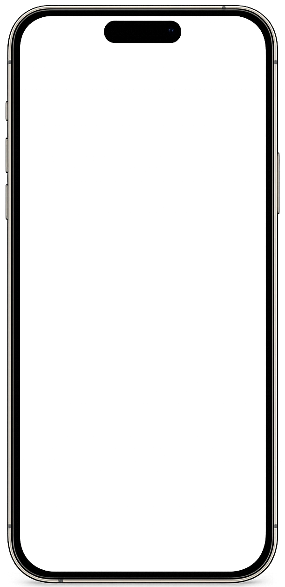
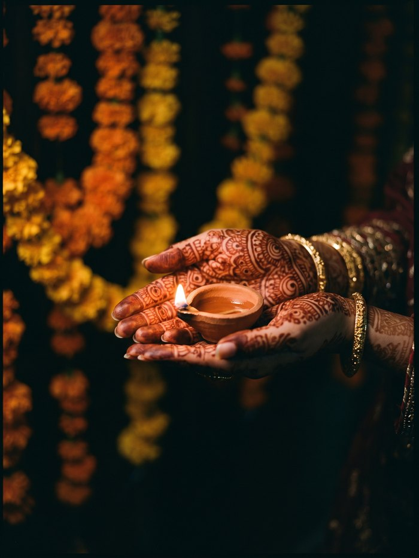
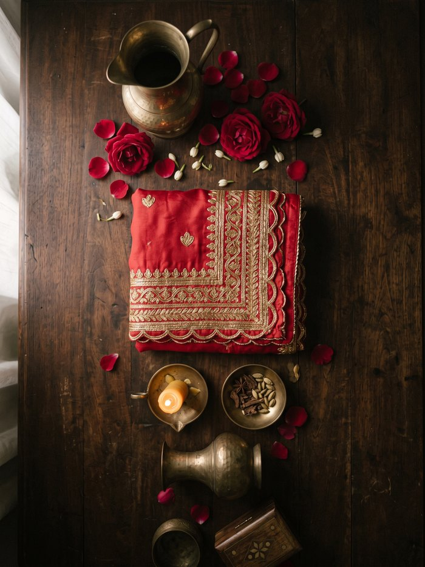

Not a paper card.
Not a photo.
A living invitation.Not just an invitation.
An experience they open.
A cinematic wedding invitation your guests open on their phone, in English and Urdu, with music, RSVP, venue maps and calendars built in. One private link, shared on WhatsApp.Cinematic invitations with music, Urdu, RSVP and venue directions, shared through one private WhatsApp link.

Find the design that feels like yours.
Twenty-four designs, and no two open the same way. Pick the tier for how much of it is built around you, and the design for how it should feel.
Every Template Edition is completed with your names, functions, wording and photos. Pick the one you love, and we craft the rest.
See packagesThree ways to invite. Only one your guests remember.
Beautiful, and gone
Expensive to print and courier at scale, days to deliver, impossible to update, and it cannot tell you who is coming. It sits in a drawer, then a bin.
Cheap, and it shows
A flat JPG or PDF forwarded on WhatsApp. Better than paper on cost, but static, silent, no RSVP, no map, no life. It reads exactly as low effort as it is.
An experience they keep
Cinematic, bilingual and interactive, with RSVP, directions and calendars built in. One private link, instantly shared, easily updated, and unmistakably premium.
Paper vs photo vs a Niru invitation
The same wedding, three ways to invite. Here is exactly what each one can, and cannot, do.
Swipe to compare all three →
| Feature | PaperPrinted card | PhotoJPG or PDF | NiruLiving invitation |
|---|---|---|---|
| Cost at 200+ guests | High, print & courier | Low | One flat price |
| First preview | Days to weeks | Same day | From 24 hours, by tier |
| Share on WhatsApp | ✕ | ✓ | ✓ |
| Works on any phone, no app | Physical only | ✓ | ✓ |
| Cinematic entrance & motion | ✕ | ✕ | ✓ |
| Background music | ✕ | ✕ | ✓ |
| English & Urdu | Pick one | Pick one | Both, one tap |
| Live RSVP tracking | ✕ | ✕ | ✓ private live response sheet |
| Countdown to the day | ✕ | ✕ | ✓ |
| Venue maps & directions | ✕ | ✕ | ✓ |
| One tap Add to Calendar | ✕ | ✕ | ✓ Google, Apple, Outlook |
| Interactive scratch reveal | ✕ | ✕ | ✓ |
| Photo gallery | ✕ | 1 image | ✓ full gallery |
| Guest wishes & blessings | ✕ | ✕ | ✓ |
| Editable after sending | ✕ | Resend a new file | Same link updates |
| Feels premium & memorable | Classic but static | Low effort | ✓ Unforgettable |
Everything your wedding needs, built in.
Not features for the sake of it. Every one earns its place in the story of your day.
The entrance
No Niru card just loads. Every design is shut when it arrives, and your guest has to open it with their hand — and no two designs open the same way. Their wedding begins the moment they do.
- Press & hold the diya until the flame takes and the hall lights around it
- Swing the hanging lantern and let the light sweep the courtyard awake
- Draw the chunri aside — it folds, it drags, it falls back if you let go early
- Touch the still water and hold, until the ripples wake the reflection
- Knock three times on a carved haveli door and wait for it to swing
- Break the wax seal and let the envelope release the card
Background music
Choose from sitar, tabla, shehnai, flute or qawwali.
Live countdown
Ticking down to the big day.
Scratch to reveal
Scratch the gold to unveil the date.
English & Urdu
One tap switches the whole card.
RSVP tracking & wishes
Every reply and blessing lands in your dashboard. No more chasing guests by phone.
Venue maps
Directions to every function.
Add to Calendar
Google, Apple and Outlook, one tap.
Photo gallery, moments & places
A curated gallery that unveils with a curtain reveal, so your favourite moments open like a story.


Your own link
Your names in the address, unlimited guests. Or a custom address like hamza-manahil.niru.pk for Rs 1,000.
Beautiful the moment you send it
Share your link on WhatsApp and it does not arrive as a bare address. Your names and a preview image open the message — before anyone has even tapped it. Premium and Atelier previews can carry your card’s own artwork.
Our Story timeline
How you met, the promise, the beginning — told as a scroll your guests move through.
Every function detailed
Mehndi, Baraat, Nikah and Walima, each with its own timing, venue and dress code.
A personal welcome
Greet your guests in your own words.
From your details to a shared link, in days.
Fill your details
Share your names, functions, venues, photos and wording.
We craft your card
We hand personalise every detail, with music, motion, maps and your photos.
Share & collect
Send your private link on WhatsApp and watch RSVPs arrive.
Three tiers. One complete invitation.
Choose your experience, then begin with a finished Template Edition or a Personalised Edition created from a new brief.
The crossed amount is the regular price. Our first 50 couples pay the founding price shown; after that, the regular price applies. A Template Edition keeps its original art direction and is completed with your wedding details. A Personalised Edition starts from a new creative brief within the experience you choose. Optional with every invitation: a Custom Niru Address such as taha-ayesha.niru.pk for Rs 1,000, selected while ordering.
Kind words from our couples.
Real experiences shared by couples who created their wedding invitations with Niru.
Ready to begin your invitation?
Open any card in the collection for yourself — each one is fully live — then choose the design that feels like you. We hand craft the rest.
Frequently asked
After the order and complete details are confirmed, a Signature Template Edition is previewed within 24 to 48 hours, Premium within 2 to 3 days, and Atelier within 4 to 5 days. Personalised Edition timing is agreed during consultation.
Yes. A Niru invitation opens in any modern browser on any phone, tablet or computer. There is no app to download and nothing for your guests to install.
Absolutely. Guests RSVP inside the invitation, and you receive a private live Google Sheet where every response appears automatically. Your sheet is view-only for safe tracking and is meant only for the couple, not for sharing with guests.
Yes. Invitations can be delivered in English, Urdu, or both with a one tap language switch, so every guest reads it comfortably.
Yes, that is the beauty of digital. Your invitation lives at one private link, so updates appear instantly without resending anything.
Browse the collection, open the live demo of anything you like, and choose Select this template. You fill in your details on a short form built for that package, and we share a preview before anything is finalised.
Signature: Essential Interactive includes the entrance, RSVP, gallery, bilingual controls, maps and calendars. Premium: Complete Experience adds premium artwork, richer sections, concierge support and enhanced RSVP reporting. Atelier: Cinematic Experience includes everything in Premium, elevated with a cinematic couple entrance and an interactive opening sequence. Every tier is available as either a Template Edition or a Personalised Edition.
A Template Edition keeps the design and artistic direction shown in its live demo, then we complete it with your names, functions, wording and photos. A Personalised Edition begins with a consultation and a new creative brief, so its visual direction is created for your wedding alone. Its timeline is confirmed during consultation.
Your private invitation link remains active for one year from delivery. If you would like to keep it afterward as a wedding memory, message the studio before it expires and we will keep it active for you.
You receive an order summary by email after submission. A PDF invoice is not currently provided.
Support is available through WhatsApp, email and Instagram from 10:00 am until midnight, Monday to Saturday. The studio is closed on Sunday.
No, and that is the point. One is opened by pressing and holding a diya until the flame takes. Another by swinging a hanging lantern so the light sweeps the courtyard. Another by drawing a bandhani chunri aside with your hand, which folds and drags and falls back if you let go too early. Others by touching still water, knocking three times on a carved door, or breaking a wax seal. Every design owns its own opening.